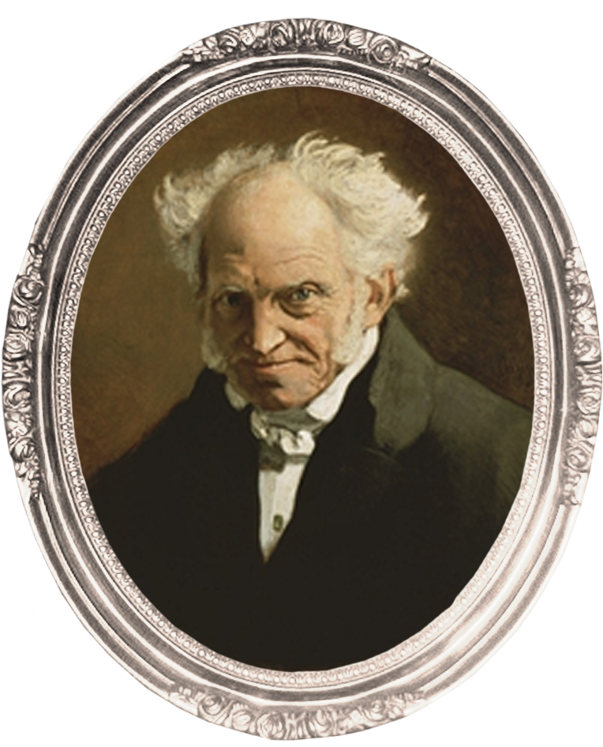
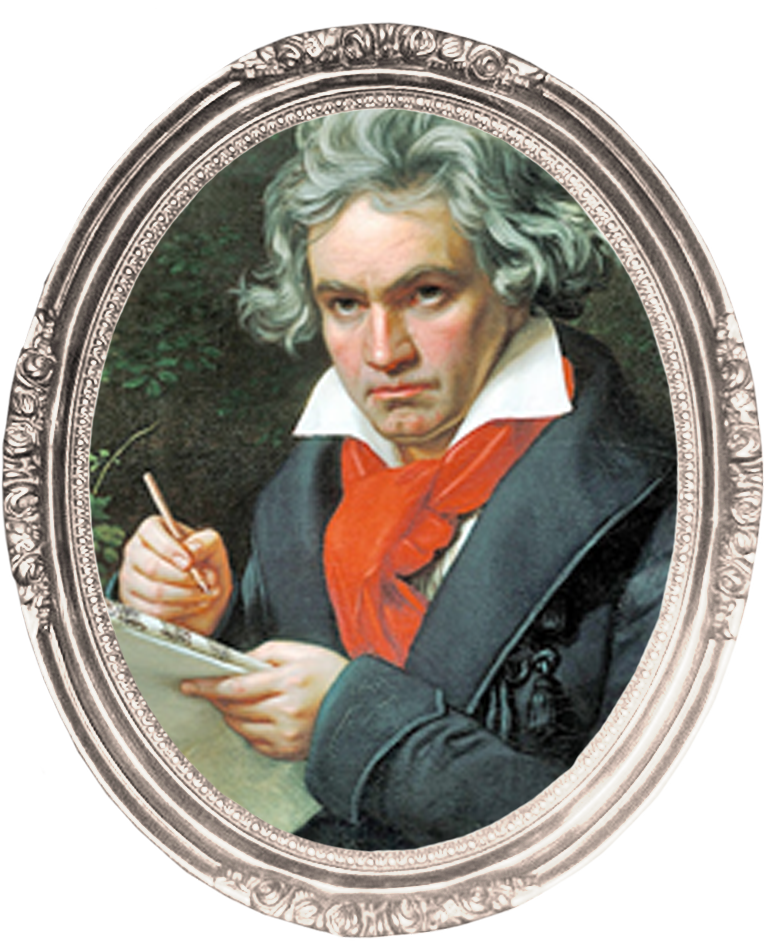

CLASSICAL
1750 ~ 1810

Arthur Schopenhauer
(1788 ~ 1860)
독일의 철학자이자 사상가. 유럽의 항구 도시인 단치히에서 상인이었던 아버지 하인리히 쇼펜하우어와 소설가인 어머니 요한나 쇼펜하우어의 장남으로 출생했다. 실존 철학은 물론 프로이트와 융의 심리학에 지대한 영향을 끼친, 19세기 서양 철학계의 상징적인 인물이다. 흔히 염세주의자로 알려져 있지만, 인간 삶의 비극적 면면을 탐구한 사상가이며, 그의 철학은 근대 철학에도 큰 영향을 미쳤다.

L. van Beethoven
(1770 ~ 1827)
독일의 서양 고전 음악 작곡가인 베토벤은 독일의 본에서 태어났으며, 성인이 된 이후 거의 오스트리아 빈에서 살았다. 감기와 폐렴으로 인한 합병증으로 투병하다가 57세로 생을 마친 그는 고전주의와 낭만주의의 전환기에 활동한 주요 음악가이며, 작곡가로 널리 존경받고 있다. "음악의 성인(聖人)" 또는 "악성"(樂聖)이라는 별칭으로 불리기도 한다.
PHILOSOPHY IN MUSIC